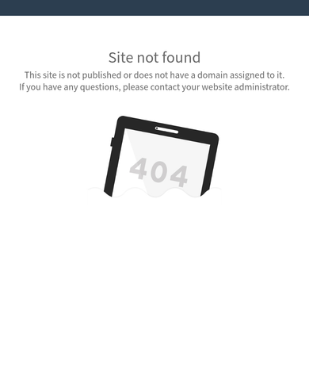

Voted a finalist. Site not found.

Tap “Website” on their Google listing. This is what opens.

Rebuilt for the phone. This is the real new site. Try “Need a tow?” inside the phone.
- The website on their Google listing opens “Site not found,” with no phone, hours or towing info. It isn’t sized for phones, and the https address fails.
- King George voted them a 2026 Best of the Best finalist for Best Auto Repair and Best Towing Service.
- Put back: since-1981 story, services, open-now hours, and a one-tap “Need a tow?” helper that builds a tow card before you call.
- This is a Site Rehab, starting at $1,500.